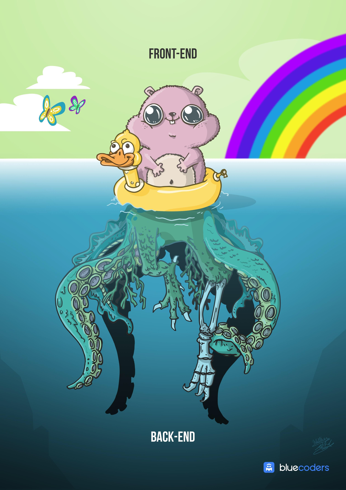

Why are you passionate about front-end development?
I believe that the main reason is that front-end development satisfies my need for creativity. It enabled me to easily put my ideas into digital form and get results back really quick. I still remember the first time I created an HTML page and opened it in the browser. A whole new world of possibilities appeared before my eyes.
I became really passionate and kept creating since then. I’m really grateful that I’m able to make a living through it and made my passion my work. It absolutely has its ups and downs but if you love what you do and are able to provide value to people, the outcomes are far more rewarding!
Front end development is the only form of development that the user will actually see. Every optimization or decision you make actually matters. In the back end, you have to get to very high scale before the optimizations you create make a tangible impact on the application, but on the front end every user matters. Every image optimization or padding increase or CSS animation makes a big difference to every single user.
Both front-end and back-end are equally important, but as someone who loves interacting with the end customer, front end development is the most fulfilling. Full article on quora.com
What is a front-end developer?
The best way I can describe a Front-end developer is an hybrid between the designer and the back-end developer. It is the person responsible for the interaction between the user and interface.
A designer will, typically, visualize, design and mockup a concept or solution to implement taking in consideration several design guidelines and best practices such as User Experience, Accessibility, etc.
A backend developer will, typically, be in charge of all the data management functions such as storing and fetching data from databases. In some cases a backend developer will also be responsible for some server configuration. A front-end developer will take the designer creation and bring it to life giving it interaction (ex: buttons, mouse houvers) and implementing a way for the design to communicate with the database. Full article on quora.com